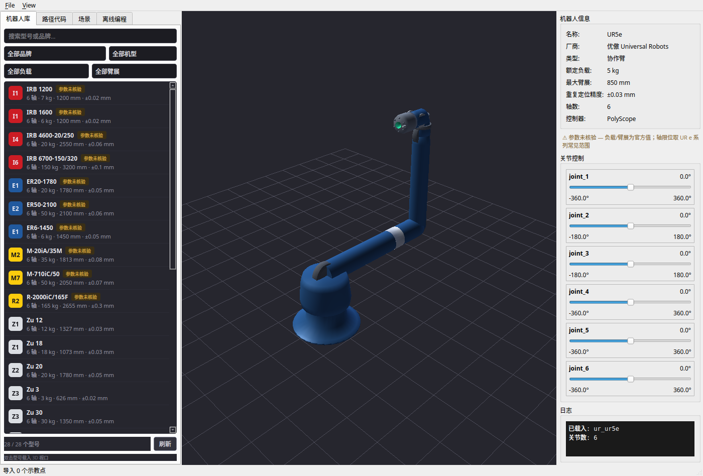
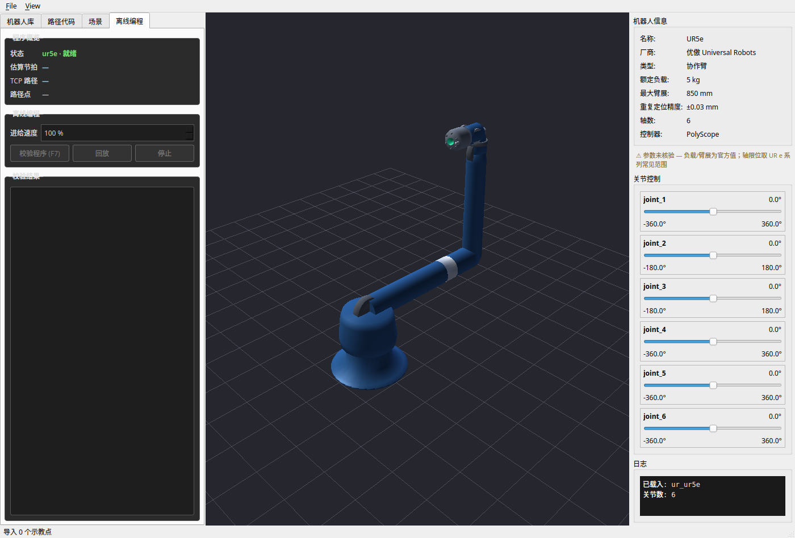
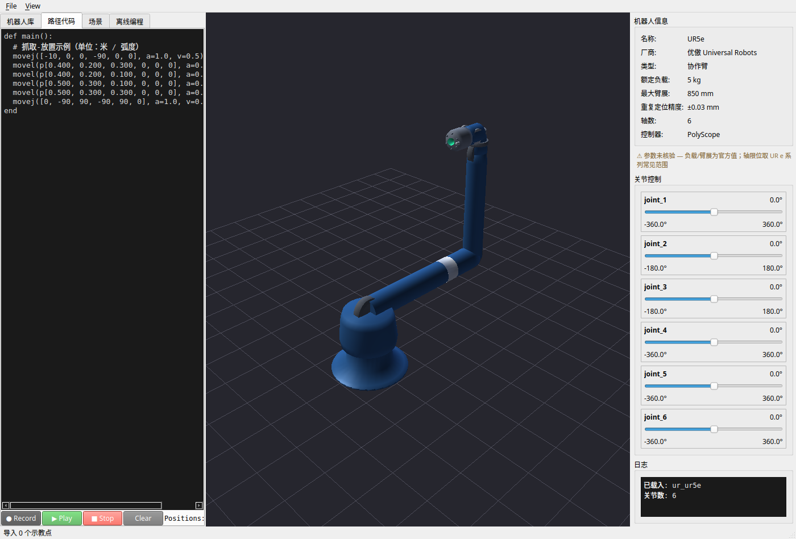

节拍数据（真实仿真输出）
8.9s
单循环节拍（pick & place 全程）
13
程序路点数
5
工艺 IO 指令（夹爪开合/反馈等待）
4
同站待抓工件
TCP Z77
吸盘 TCP（法兰下方 mm）
工作站布局（俯视示意）
机器人基座在原点；布局坐标与 orolp.world.templates 中 1:1 一致，加载模板即可在 GUI 中得到同款场景。
TCP 轨迹动画（抓取 → 搬运 → 落件 → 返回）
黄色点为 TCP；蓝色块为被吸盘抓住的工件（抓取后随动、落件后留在托盘）——与 GUI 回放逻辑同款行为。
抓取随动动画（S3 已落地 · GUI 与离线脚本共用一份语义）
程序执行到 gripper("close") 的时刻，工件吸附到法兰并随 TCP 随动（吸附瞬间世界位姿不变）；执行 gripper("open") 后工件原地留在落件位姿。
orolp.world.animation：把夹爪 IO 指令映射到轨迹时间轴（GraspAnimator，无头可测，GUI 与脚本共用）- 离线编程面板：插补回放越过抓取/释放事件时自动驱动场景工件挂载/解除
- 示教点标记为「抓取点/放置点」后，程序自动插入
gripper()指令——回放动画与品牌出码共用同一份抓取时序 - 测试基线 263 passed（含 14 个抓取动画专项测试）
GUI 一键演示（S4 已落地 · 菜单一键到动画）
rw.py「文件 → 抓取工作站演示（一键）」：构建模板场景 → 视口载入 UR5e → IK 生成五点式抓取循环示例程序（orolp.world.demo，无头可测）→ 自动校验显示节拍 → 自动开始回放，工件吸附/释放全程随动。
- 示例示教点带工艺语义（接近/抓取/提升/落件/撤离），回放动画与品牌出码共用同一份抓取时序
- 布局经过可达性校准：全部示教位姿对 UR5e 模型留 ≥27mm 距离余量（IK 有解才有演示）
- 测试基线 263 passed（含 12 个一键演示专项测试）
品牌机器人代码（真实后处理输出，含夹爪 IO）
UR · URScriptKUKA · KRLABB · RAPIDFANUC · TP
# --- UR · URScript ---
def GRASP_DEMO():
# RobotWorld v0.1.0 generated URScript
# Robot: UR5e
movej([0.0000, -1.5708, 1.5708, -1.5708, 1.5708, 0.0000], a=1.20, v=0.0800, r=0.0000)
movel(p[0.0600, -0.4000, 0.4280, 3.1416, 0.0000, 0.0000], a=1.20, v=0.1000, r=0.0000)
movel(p[0.0600, -0.4000, 0.3280, 3.1416, 0.0000, 0.0000], a=1.20, v=0.0400, r=0.0000)
set_digital_out(0, False)
set_digital_out(1, True)
wait_digital_in(3, True) # TODO: 超时 2.00s 需自行实现看门狗
movel(p[0.0600, -0.4000, 0.4280, 3.1416, 0.0000, 0.0000], a=1.20, v=0.0800, r=0.0000)
movel(p[0.3500, 0.4500, 0.3540, 3.1416, 0.0000, 0.0000], a=1.20, v=0.1000, r=0.0000)
movel(p[0.3500, 0.4500, 0.2040, 3.1416, 0.0000, 0.0000], a=1.20, v=0.0400, r=0.0000)
set_digital_out(1, False)
set_digital_out(0, True)
movel(p[0.3500, 0.4500, 0.3540, 3.1416, 0.0000, 0.0000], a=1.20, v=0.0800, r=0.0000)
movej([0.0000, -1.5708, 1.5708, -1.5708, 1.5708, 0.0000], a=1.20, v=0.0800, r=0.0000)
end
# --- KUKA · KRC4 KRL ---
&ACCESS RVP
&REL 1
DEF GRASP_DEMO()
; Generated by RobotWorld v0.1.0
; Robot: UR5e
BAS(#INITMOV, 0)
PTP 0.000, -90.000, 90.000, -90.000, 90.000, 0.000
LIN 60.000, -400.000, 428.000, 180.000, -0.000, 0.000
LIN 60.000, -400.000, 328.000, 180.000, -0.000, 0.000
$OUT[0] = FALSE
$OUT[1] = TRUE
WAIT FOR $IN[3] ; TODO: 超时 2.00s 需用 $TIMER 自行实现
LIN 60.000, -400.000, 428.000, 180.000, -0.000, 0.000
LIN 350.000, 450.000, 354.000, 180.000, -0.000, 0.000
LIN 350.000, 450.000, 204.000, 180.000, -0.000, 0.000
$OUT[1] = FALSE
$OUT[0] = TRUE
LIN 350.000, 450.000, 354.000, 180.000, -0.000, 0.000
PTP 0.000, -90.000, 90.000, -90.000, 90.000, 0.000
END
# --- ABB · RAPID ---
MODULE GRASP_DEMO
! Generated by RobotWorld v0.1.0
! Robot: UR5e
PROC main()
MoveJ [0.000, -90.000, 90.000, -90.000, 90.000, 0.000], v80, fine, tool0;
MoveL [60.000, -400.000, 428.000, 180.000, -0.000, 0.000], v100, fine, tool0;
MoveL [60.000, -400.000, 328.000, 180.000, -0.000, 0.000], v40, fine, tool0;
SetDO gripper_open, 0; ! Q0.0
SetDO gripper_close, 1; ! Q0.1
WaitDI clamped, 1 \MaxTime:=2.000; ! I0.3
MoveL [60.000, -400.000, 428.000, 180.000, -0.000, 0.000], v80, fine, tool0;
MoveL [350.000, 450.000, 354.000, 180.000, -0.000, 0.000], v100, fine, tool0;
MoveL [350.000, 450.000, 204.000, 180.000, -0.000, 0.000], v40, fine, tool0;
SetDO gripper_close, 0; ! Q0.1
SetDO gripper_open, 1; ! Q0.0
MoveL [350.000, 450.000, 354.000, 180.000, -0.000, 0.000], v80, fine, tool0;
MoveJ [0.000, -90.000, 90.000, -90.000, 90.000, 0.000], v80, fine, tool0;
ENDPROC
ENDMODULE
# --- FANUC · TP ---
/PROG GRASP_DEMO
/ATTR
COMMENT = "RobotWorld v0.1.0";
/MN
J 0.00, -90.00, 90.00, -90.00, 90.00, 0.00 80% FINE ;
L 60.00, -400.00, 428.00, 180.00, -0.00, 0.00 100mm/sec FINE ;
L 60.00, -400.00, 328.00, 180.00, -0.00, 0.00 40mm/sec FINE ;
DO[0]=OFF
DO[1]=ON
WAIT DI[3]=ON ! TODO: 超时 2.00s 需用 SKIP 条件实现
L 60.00, -400.00, 428.00, 180.00, -0.00, 0.00 80mm/sec FINE ;
L 350.00, 450.00, 354.00, 180.00, -0.00, 0.00 100mm/sec FINE ;
L 350.00, 450.00, 204.00, 180.00, -0.00, 0.00 40mm/sec FINE ;
DO[1]=OFF
DO[0]=ON
L 350.00, 450.00, 354.00, 180.00, -0.00, 0.00 80mm/sec FINE ;
J 0.00, -90.00, 90.00, -90.00, 90.00, 0.00 80% FINE ;
/POS
/END
GUI 截图


